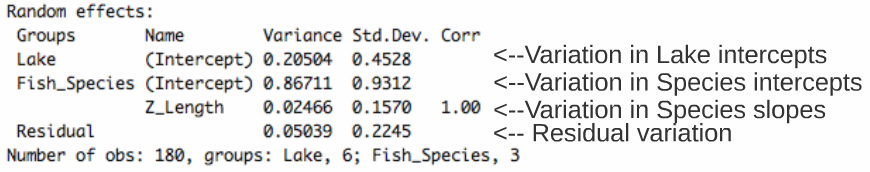

Chapter 9 How do I implement LMM’s in R?
9.1 The mixed model protocol in R:
2.1: A priori model building and data exploration
2.2: Coding potential models and model selection
2.3: Model validation
2.4: Interpreting results and visualizing the model9.2 A priori model building and data exploration
We are interested in finding out if trophic position can be predicted by length, while accounting for variation between species and lakes. So we know we want a model that looks something like this:
<m> {TP_ijk} ∼ {Length_i} + {Lake_j} + {Species_k} + {ε} </m>
where,
<m>{TP_ijk}</m> is the trophic position of individual (i) from lake
(j) of species (k)
and
ε are the residuals of the model (i.e. the unexplained variation).
Data Exploration
Always make sure you’ve done "Housekeeping" on your data before you start building models! Is the data in the right structure? Use the following code to view the structure and variable types within your data frame.
################ Section 2######################### Running a mixed model in
################ R Four Step Process to build a mixed model in R
# 1) A priori model bulding and data exploration#### i) Map
# out the model based on a priori knowledge We know that we
# want to build a model that evaluates the relationship
# bewteen trophic position and length while accounting for
# lake and species variation Trophic Position ~ Length +
# Species + Lake
# ii)Housekeeping and data exploration Ensure that the
# structure of your data is correct
str(data)++++ Output |  ++++
++++
Look at the distribution of samples across factors:
# Look at sample distribution across factors to check if
# there are any major unequal distributions
table(data$Lake)
table(data$Fish_Species)++++ Output | Lake
---- 
---- Species
---- 
---- ++++
This data set is perfectly balanced, but mixed models can deal with unbalanced designs (like we so often have to in Ecology!).
Look at the distribution of continuous variables:
# Look at distribution of continuous variables Transform if
# necessary (will avoid future problems with homogeneity of
# model residuals)
hist(data$Fish_Length)
hist(data$Trophic_Pos)++++ Output | Length
---- 
---- Trophic Position
---- 
---- ++++ Major skews can lead to problems with model homogeneity
down the road. So if necessary, make transformations. In this case, the
data seems OK.
Check for collinearity between variables: It is important not to include 2 collinear variables in the same model, otherwise their effects on the response variable will be confounded, i.e. the model can’t tell which of the collinear variable is responsible for the variation in the response variable. By default, the model would give a lot of explanatory power to the first variable in the model, and little power to the following variables.
In this example, we have only one explanatory variable, so there is no risk of collinearity. If you did have another explanatory variable (Var2) and wanted to check for collinearity, you could use:
CHALLENGE 3
What are some additional measures we could have gotten in the wild that might have been collinear with length?
++++ Challenge 3 Answer | One example is fish mass - this is highly correlated with fish length. Therefore, we would not want to include both in the same model as predictors. ++++
Consider the scale of your data:\
If two variables in the same model have different ranges of scale, the
criteria the mixed models use to come up with parameter estimates are
likely to return ‘convergence errors’. Z-correction standardizes your
variables and adjusts for this scaling problem by placing all your
variables on the same scale even if they were originally in different
units:
<m> {z} = ({x} - {mean(x)}) / {sd(x)} </m>
Because the data we are dealing with have such variable scales (length
is a longer scale than trophic position), we z-correct it.
# Consider the scales of your variables Note: when 2
# variables have very different ranges of scale the criteria
# mixed models use to come up with parameter estimates are
# likely to return 'convergance errors' Z correcting adjusts
# for this scaling problem: What is a z correction?: (z = (x
# - mean(x))/sd(x)) Z-correct Length
data$Z_Length <- (data$Fish_Length - mean(data$Fish_Length))/sd(data$Fish_Length)
# Z-correct Trophic Position
data$Z_TP <- (data$Trophic_Pos - mean(data$Trophic_Pos))/sd(data$Trophic_Pos)To know if a mixed model is necessary for your data set you must
establish if it is actually important to account for variation in the
factors that might be affecting the relationship that you’re interested
in, Lake and Species in this case.
We can do this by:
-Creating a linear model without factors
-Calculating the residuals of this linear model
-Ploting the residuals of the linear model against the factors of interest# Find out if it is important to account for variation in
# 'random effects' by comparing the residuals of a linear
# model without the random effects with the potential random
# effects
lm.test <- lm(Z_TP ~ Z_Length, data = data)
lm.test.resid <- rstandard(lm.test)
# Species Effect
plot(lm.test.resid ~ data$Fish_Species, xlab = "Species", ylab = "Standardized residuals")
abline(0, 0, lty = 2)
# Lake Effect
plot(lm.test.resid ~ data$Lake, xlab = "Lake", ylab = "Standardized residuals")
abline(0, 0, lty = 2)++++ Output| Species
---- 
---- Lake
---- 
---- ++++
For this model, we should keep the random effects because the standardized residuals show variation across lake and species.
9.3 Coding potential models and model selection
Our a priori model
<m> {TP_ijk} ∼ {Length_i} + {Lake_j} + {Species_k} + {ε} </m>
coded in R looks like this:

The lmer structure is not intuitive. The basic parts to the function
are:

REML (Restricted Maximum Likelihood) is the default estimation method in
the "lmer" function. REML estimates can be used when comparing models
with the same fixed effects (i.e. nested models). However, if you are
comparing models where the fixed effects differ among models then
maximum likelihood should be used to fit parameters as this method is
not dependent on the coefficients of the fixed effects. Fitting using
maximum likelihood is done by setting REML=FALSE in the lmer command.
What about coding varying slopes as well as intercepts?

CHALLENGE 4
Re-write the following code so that the slopes of the trophic
position/length relationship also vary by lake and species.
++++ Challenge 4 Answer |
++++
To determine if you’ve built the best linear mixed model based on your a priori knowledge you must compare this "a-priori" model to possible alternative models. With the dataset we are working with there are many potential models that might best fit the data.
CHALLENGE 5
Make a list of 7 alternative models to the following model that can be
built and compared: Note - If we had different fixed effects among
models we would have to indicate "REML=FALSE" to compare with
likelihood methods like AIC (see explanation above). However, you should
report parameter estimates from the ‘best’ model using "REML=TRUE".
++++ Challenge 5 Answer |
m1 <- lmer(Z_TP ~ Z_Length + (1 | Lake) + (1 | Species), data = data,
REML = TRUE)
m2 <- lmer(Z_TP ~ Z_Length + (1 + Z_Length | Lake) + (1 + Z_Length |
Species), data = data, REML = TRUE)
m3 <- lmer(Z_TP ~ Z_Length + (1 | Species), data = data, REML = TRUE)
m4 <- lmer(Z_TP ~ Z_Length + (1 | Lake), data = data, REML = TRUE)
m5 <- lmer(Z_TP ~ Z_Length + (1 + Z_Length | Species), data = data,
REML = TRUE)
m6 <- lmer(Z_TP ~ Z_Length + (1 + Z_Length | Lake), data = data,
REML = TRUE)
m7 <- lmer(Z_TP ~ Z_Length + (1 + Z_Length | Lake) + (1 | Species),
data = data, REML = TRUE)
m8 <- lmer(Z_TP ~ Z_Length + (1 | Lake) + (1 + Z_Length | Species),
data = data, REML = TRUE)
# Bonus model!
M0 <- lm(Z_TP ~ Z_Length, data = data)
# It is always useful to build the simple linear model
# without any varying intercept and slope factors to see the
# difference in AICc values. Although 'lm' does not use the
# same estimation method++++
Now that we have a list of potential models, we can compare them to get a better idea of what is going on in our dataset and to select the one(s) with the highest predictive power given the data. Models can be compared using the "AICc" function from the "AICcmodavg" package. The Akaike Information Criterion (AIC) is a measure of model quality that can be used to compare models. AICc corrects for bias created by small sample size when estimating AIC.
# 2) Coding potential models and model selection#### i)
# Coding all potential models List of all Potential models-->
# Note: you can chose to not code ones that do not make
# biological sense. Linear model with no random effects
M0 <- lm(Z_TP ~ Z_Length, data = data)
# Full model with varying intercepts
M1 <- lmer(Z_TP ~ Z_Length + (1 | Fish_Species) + (1 | Lake),
data = data, REML = FALSE)
# Full model with varying intercepts and slopes
M2 <- lmer(Z_TP ~ Z_Length + (1 + Z_Length | Fish_Species) +
(1 + Z_Length | Lake), data = data, REML = FALSE)
# No Lake, varying intercepts only
M3 <- lmer(Z_TP ~ Z_Length + (1 | Fish_Species), data = data,
REML = FALSE)
# No Species, varying intercepts only
M4 <- lmer(Z_TP ~ Z_Length + (1 | Lake), data = data, REML = FALSE)
# No Lake, varying intercepts and slopes
M5 <- lmer(Z_TP ~ Z_Length + (1 + Z_Length | Fish_Species), data = data,
REML = FALSE)
# No Species, varying intercepts and slopes
M6 <- lmer(Z_TP ~ Z_Length + (1 + Z_Length | Lake), data = data,
REML = FALSE)
# Full model with varying intercepts and slopes only varying
# by lake
M7 <- lmer(Z_TP ~ Z_Length + (1 | Fish_Species) + (1 + Z_Length |
Lake), data = data, REML = FALSE)
# Full model with varying intercepts and slopes only varying
# by species
M8 <- lmer(Z_TP ~ Z_Length + (1 + Z_Length | Fish_Species) +
(1 | Lake), data = data, REML = FALSE)
# ii) Compare models using AICc values Compute AICc values
# for each model
AICc <- c(AICc(M0), AICc(M1), AICc(M2), AICc(M3), AICc(M4), AICc(M5),
AICc(M6), AICc(M7), AICc(M8))
# Put values into one table for easy comparision
Model <- c("M0", "M1", "M2", "M3", "M4", "M5", "M6", "M7", "M8")
AICtable <- data.frame(Model = Model, AICc = AICc)
AICtable
# M8 has the lowest AICc value so it is the best fit model M2
# is also a good fit, but all other models are not nearly as
# good. Note when you compare models they must be fit by
# Maximum Likelihood (ML) and not by Restricted Maximum
# Likelihood (REML)++++ Output|  ++++
++++
The model with the lowest AIC value has the most predictive power given the data. Some suggest that if models are within 2 AICc units of each other then they are equally plausible. In this case, we can take a closer look at M8 and M2, but all other models have such high AICc values that they are not explaining as much variation in the data as M8 and should not be considered as plausible options to explain the patterns in the data
CHALLENGE 6
Take 2 minutes with your neighbour to draw out the model structure of
M2. Biologically, how does it differ from M8? Why is it not surprising
that it’s AICc value was 2nd best?
M2 <- lmer(Z_TP ~ Z_Length + (1 + Z_Length | Fish_Species) +
(1 + Z_Length | Lake), data = data, REML = FALSE)++++ Challenge 6 Answer | M2: The trophic position is a function of length and both the intercept and the effect of length on trophic position can vary by fish species and lake.
M8: The trophic position is a function of length and both the intercept and the effect of length on trophic position can vary by fish species but only the intercept can vary by lake (not the slope of trophic position on length).
Biologically, speaking M2 says that intrinsic factors of species (e.g. growth rates) and lakes (e.g. productivity, community composition, etc.) cause the relationship between trophic position and length to differ (i.e. both slopes and intercepts), whereas, M8 says that intrinsic factors of species alone cause this relationship to differ (i.e. slopes) and that on average trophic positions might be higher or lower in one lake versus another (i.e. intercepts).
These models are very similar in structure and the AIC units suggest this. The added complexity of allowing varying slopes by lake in M2 does not improve the model’s predictive power when compared to M8. ++++
9.4 Model validation
To look at independence plot model fitted values vs residuals values:
# 3) Checking model assumptions#### Checking for M8 A. Look
# at independence: plot fitted values vs residuals
E1 <- resid(M8)
F1 <- fitted(M8)
plot(x = F1, y = E1, xlab = "Fitted Values", ylab = "Normalized residuals")
abline(h = 0, lty = 2)++++ Output|  ++++
++++
The even spread of the residuals suggest that the model is a good fit for the data.
To check the assumption of homogeneity plot residuals vs each covariate in the model:
# B. Look at independence: i. plot residuals vs each
# covariate in the model Fish_Length
plot(x = data$Z_Length, y = E1, xlab = "Z Length", ylab = "Normalized residuals")
abline(h = 0, lty = 2)
# Note: observed groupings are created by the nature of the
# data because in the data set we only measured individuals
# from 5 categories of lengths (big, small, and three groups
# in between) Species
boxplot(E1 ~ Fish_Species, ylab = "Normalized residuals", data = data,
xlab = "Species")
abline(h = 0, lty = 2)
# Lake
boxplot(E1 ~ Lake, ylab = "Normalized residuals", data = data,
xlab = "Lake")
abline(h = 0, lty = 2)++++ Output|


++++ The equal spread above and below zero indicate that there are no homogeneity problems with these variables.
Ideally you would also do the above analysis with every covariate not in your model as well. If you observe patterns in these plots you will know that there is variation in your dataset that could be accounted for by these covariates that were not included in the model, and so you should re-consider the inclusion of this variable in your model. However, because there are no covariates we measured that we decided not to include in the model this point is not applicable to this analysis.
It is also important to check the distribution of residual error. Normally distributed residuals indicate that your model predictions are not biased high or low:
++++ Output|  ++++
++++
9.5 Interpreting results and visualizing the model
You can view the model summary using:
# Look at model summary This allows you to get an idea of the
# variance explained by the different components of the model
# and the 'significance' of fixed effects
summary(M8)++++ Output|  ++++ The output is broken
up into descriptions of the Random effects (things we allow to vary
based on the normal distribution) and Fixed effects (things we estimate
in the same way as classical regression):
++++ The output is broken
up into descriptions of the Random effects (things we allow to vary
based on the normal distribution) and Fixed effects (things we estimate
in the same way as classical regression):


To determine if the slope and, therefore, the effect of length on trophic position is significantly different from zero you first have to calculate the confidence interval (CI) for the slope parameter (estimate for Z_Length in the fixed effects section = 0.4223). The CI = Standard Error of the estimate x 1.96 plus or minus the parameter estimate. If the CI overlaps with zero, then the slope is not significantly different from zero at the 0.05 level.

CHALLENGE 7
a) What is the slope and confidence interval of the Z_Length variable
in the M8 model?
b) Is the Z_Length slope significantly different from 0?
++++ Challenge 7 Answer | a) What is the slope and confidence interval of the Z_Length variable in the M8 model?
-Slope = 0.4223
upper CI = 0.4223 + 0.09*1.96 = 0.5987
lower CI = 0.4223 - 0.09*1.96 = 0.2459b) Is the Z_Length slope significantly different from 0?
-Yes, because the CI does not overlap with 0++++
To visualize this model you must obtain the coefficients (intercept and slope) of each component of the model. Overall our group level model coefficients (aka: "coefs", in this case is just one intercept and slope) can be found in the summary of the model in the fixed effects section. Coefs for each of the model levels (in this case: Lake and Species) that were fit from a normal distribution can be obtained using the "coef()" function.
Two ways to visualize this data is:
-To show the group level model
-To show species and lake level models1. To show the group level model:
Obtain the parameters of interest

and plot the data with the model overlayed
# Visualizing model results#### There are several ways of
# visualizing the results of a mixed model, all of which
# involve using the coefficients generated by the model. So
# the first step is to obtain the model coefficients to be
# able to add them to the figures
coef(M8)
# Now put the coefs into dataframes to make them more easy to
# manipulate
Lake.coef <- as.data.frame(coef(M8)$Lake)
colnames(Lake.coef) <- c("Intercept", "Slope")
Species.coef <- as.data.frame(coef(M8)$Fish_Species)
colnames(Species.coef) <- c("Intercept", "Slope")
# Plot 1 - All Data Make a plot that includes all the data
plot <- ggplot(aes(Z_Length, Z_TP), data = data)
Plot_AllData <- plot + geom_point() + xlab("Length (mm)") + ylab("Trophic Position") +
labs(title = "All Data") + fig
# Add a layer that has an abline with the intercept and slope
# of the relationship between length and trophic position.
# Note that you can obtain the intercept and slope of the
# fixed factor directly from the model summary
summary(M8)
Plot_AllData + geom_abline(intercept = -0.0009059, slope = 0.4222697)++++ Output|  ++++
++++
2. To show species and lake level models:
Obtain the parameters of interest

and plot the data with the model overlay:
# Plot 2 - By Species Plot the data color coded by Species
Plot_BySpecies <- plot + geom_point(aes(colour = factor(Fish_Species)),
size = 4) + xlab("Length (mm)") + ylab("Trophic Position") +
labs(title = "By Species") + fig
# Add the regression line with the intercepts and slopes
# specific to each species
Plot_BySpecies + geom_abline(intercept = Species.coef[1, 1],
slope = Species.coef[1, 2], colour = "coral2") + geom_abline(intercept = Species.coef[2,
1], slope = Species.coef[2, 2], colour = "green4") + geom_abline(intercept = Species.coef[3,
1], slope = Species.coef[3, 2], colour = "blue1")
# Plot 3 - By Lake Plot the data color coded by lake
Plot_ByLake <- plot + geom_point(aes(colour = factor(Lake)),
size = 4) + xlab("Length (mm)") + ylab("Trophic Position") +
labs(title = "By Lake") + fig
# Add in regression lines with the intercepts specific to
# each lake
Plot_ByLake + geom_abline(intercept = Lake.coef[1, 1], slope = Lake.coef[1,
2], colour = "coral2") + geom_abline(intercept = Lake.coef[2,
1], slope = Lake.coef[2, 2], colour = "khaki4") + geom_abline(intercept = Lake.coef[3,
1], slope = Lake.coef[3, 2], colour = "green4") + geom_abline(intercept = Lake.coef[4,
1], slope = Lake.coef[4, 2], colour = "darkgoldenrod") +
geom_abline(intercept = Lake.coef[5, 1], slope = Lake.coef[5,
2], colour = "royalblue1") + geom_abline(intercept = Lake.coef[6,
1], slope = Lake.coef[6, 2], colour = "magenta3")++++ Output| 
 ++++
++++
9.6 Thought Experiment
Mixed models are really good at accounting for variation in ecological data while not loosing too many degrees of freedom.
We covered only a small amount of what LMM’s can do. Provided below are a couple other thought experiments with data structure similar to the workshop data and two textbooks that fully detail the utility of LMM’s.
CHALLENGE 8
Situation: You collected biodiversity estimates from 1000 quadrats that
are within 10 different sites which are within 10 different forests. You
measured the productivity in each quadrat as well. You are mainly
interested in knowing if productivity is a good predictor of
biodiversity.
What mixed model could you use for this dataset? ++++ Challenge 8 Answer |
>lmer(Bio_Div ~ Productivity + (1|Forest/Site))
>#Here the random effects are nested (i.e. Sites within forests), and not crossed.++++
CHALLENGE 9
Situation: You collected 200 fish from 12 different sites evenly
distributed across 4 habitat types found within 1 lake. You measured the
length of each fish and the quantity of mercury in its tissue. You are
mainly interested in knowing if habitat is a good predictor of mercury
concentration.
What mixed model could you use for this data set? ++++ Challenge 9 Answer |
++++